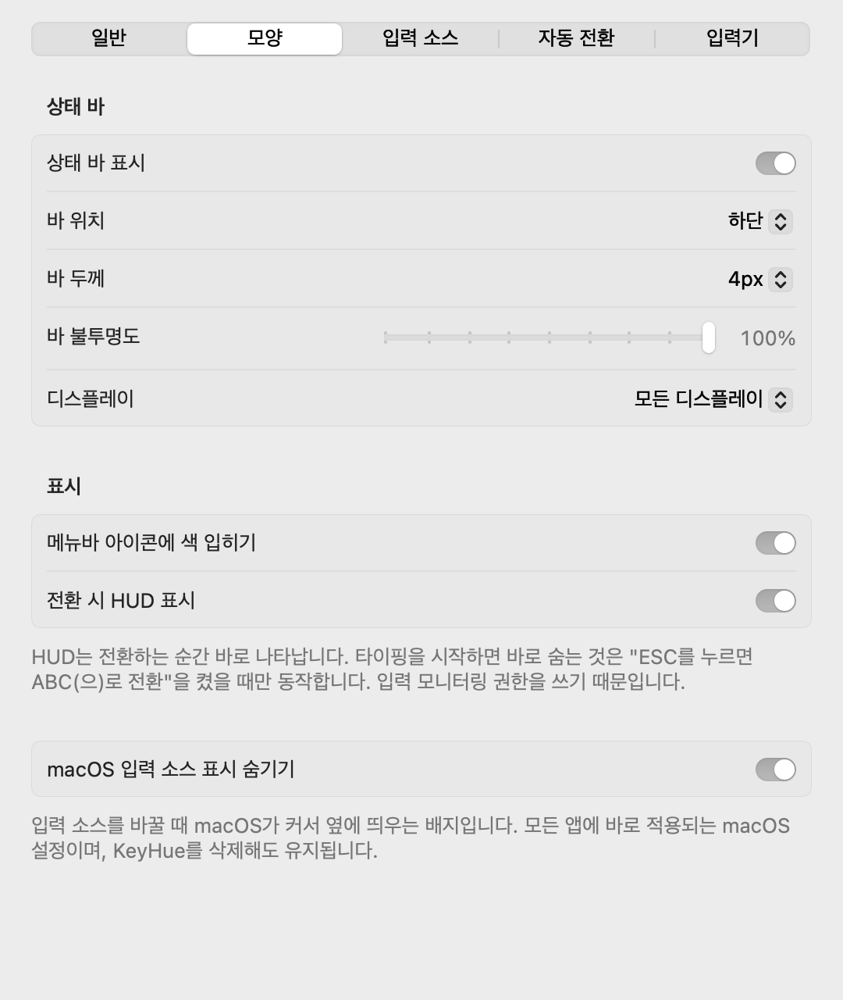

KeyHue 사용 설명서
KeyHue는 지금 Mac이 쓰고 있는 입력 소스를 화면 가장자리의 얇은 색 선으로 보여줍니다. 타이핑하기 전에 한글인지 영문인지(또는 일본어, 러시아어…) 알 수 있습니다.
설치
- 내려받기
KeyHue.zip(항상 최신 버전)을 받아 압축을 풉니다.
- 응용 프로그램 폴더로 옮기기
KeyHue.app을 응용 프로그램 폴더로 끌어다 놓습니다. macOS 13 Ventura 이상, Apple silicon과 Intel에서 동작합니다.
- 실행 허용하기
KeyHue는 Apple Developer ID 서명이 없어서, 처음 실행할 때 macOS가 막습니다.
- macOS 15 Sequoia 이상: KeyHue를 한 번 엽니다. 열 수 없다는 안내가 나오면 완료를 누릅니다. 그다음 시스템 설정 › 개인정보 보호 및 보안에서 아래로 내려 그래도 열기를 누릅니다.
- macOS 13–14: KeyHue.app을 Control-클릭(또는 우클릭)해 열기를 고르고, 대화상자에서 한 번 더 열기를 누릅니다.
- 또는 터미널에서:
xattr -dr com.apple.quarantine /Applications/KeyHue.app
버전마다 한 번만 하면 됩니다.
처음 실행
KeyHue는 메뉴바 시계 근처의 카멜레온으로 나타납니다. 카멜레온은 현재 입력 소스의 색을 띱니다. 카멜레온을 누르거나 KeyHue를 다시 실행하면 설정을 열 수 있습니다. 설정 창이 열려 있는 동안에는 Dock에도 보여 ⌘Tab으로 돌아올 수 있습니다. 늘 Dock에 두고 싶다면 설정의 Dock에 표시를 켜세요.
모든 모니터의 아래쪽 가장자리에 얇은 선이 나타납니다. 평소처럼 입력 소스를 바꿔 보세요(한/A 키, Caps Lock, Control-Space). 선의 색이 바뀝니다.
한/영 키를 눌렀는데 색이 그대로라면 실제로는 전환되지 않은 것입니다. KeyHue는 macOS가 실제로 선택한 입력 소스만 보여줍니다.
색 읽는 법
시스템 설정 › 키보드 › 입력 소스에서 켜 둔 입력 소스마다 색이 있습니다. 직접 고르기 전까지는 이 색을 씁니다.
- 파랑: ABC, U.S., German, Dvorak 등 영문 배열
- 초록: 한국어
- 주황: 일본어
- 보라: 중국어
- 청록: 러시아어 등 키릴 문자
- 빨강: Caps Lock이 켜져 있음. 어떤 입력 소스 색보다 우선합니다.
그 밖의 언어에도 자동으로 색이 정해지고, 매번 같은 색이 나옵니다. 빨강은 Caps Lock 전용입니다.
HUD
전환 시 HUD 표시를 켜면, 입력 소스를 바꿀 때마다 화면 아래쪽에 카멜레온이 새 입력 소스의 색으로 잠깐 나타납니다. 어떤 언어든 같은 방식입니다. 전환하는 순간 바로 나타나 0.25초쯤 뒤에 사라집니다. ESC를 누르면 ABC(으)로 전환을 켜 두면 타이핑을 시작하는 즉시 숨기도 합니다.
ABC 한국어 일본어 Caps Lock
메뉴
카멜레온을 누르면 메뉴가 열립니다. ✓ 표시가 있는 항목은 켜져 있는 것입니다.
| 항목 | 하는 일 |
|---|---|
| 현재 입력 | KeyHue가 지금 보고 있는 입력 소스와 그 색. |
| 상태 바 표시 | 색 선을 보이거나 숨깁니다. |
| 앱을 바꿀 때 | 그대로 두기, ABC(으)로 전환(기본 입력 소스), 마지막 입력 소스로 복원 중 하나를 고릅니다. |
| 같은 앱에서 창을 바꿀 때 | 같은 앱의 창과 탭에 대해 같은 세 가지 중 하나를 고릅니다. 손쉬운 사용 권한이 필요합니다. |
| 기억한 입력 소스 지우기 | 앱과 창에 대해 기억한 입력 소스를 지웁니다. 복원을 골랐을 때 보입니다. |
| ESC를 누르면 ABC(으)로 전환 | ESC를 누르면 기본 입력 소스로 바꿉니다. 입력 모니터링 권한이 필요합니다. |
| 기본 입력 소스 | 자동 전환의 목표. 자동은 ABC, 없으면 U.S., 없으면 다른 영문 배열을 고릅니다. |
| 전환 시 HUD 표시 | 입력 소스를 바꿀 때 카멜레온을 새 입력 소스 색으로 잠깐 보여줍니다. |
| 텍스트 필드를 벗어나면 ABC(으)로 전환 | 실험적 기능. 손쉬운 사용 권한이 필요합니다. |
| 설정… (⌘,) | 모든 옵션이 있는 설정 창을 엽니다. 막대 모양, 색, Dock 표시, 로그인 시 실행은 설정 창에서 바꿉니다. |
| 업데이트 확인… | GitHub에서 확인하고 일반 설정에 결과를 보여줍니다. 새 버전이 있으면 새 버전 다운로드로 바뀌며 해당 릴리즈 페이지를 엽니다. |
| 로그 파일 보기 | 문제를 알릴 때 첨부할 로그 파일을 Finder에서 보여줍니다. |
일부 항목 이름의 ABC는 기본 입력 소스로 지정한 이름으로 바뀝니다.
설정
메뉴에서 설정…을 고르거나, 메뉴가 열린 상태에서 ⌘,를 누릅니다.
일반

- 언어는 재시작 없이 바로 KeyHue의 언어를 바꿉니다. 시스템 기본값은 macOS 언어를 따릅니다. 입력 소스 이름은 macOS가 그 언어로 보여줍니다.
- Dock에 표시는 기본으로 꺼져 있습니다. 꺼져 있으면 KeyHue가 다른 앱의 포커스를 가져가지 않습니다. 설정 창이 열려 있는 동안에는 Dock에 보입니다.
- 업데이트: 현재 버전과 마지막으로 확인에 성공한 시각을 보여줍니다. 자동 확인은 기본으로 켜져 있으며 하루 한 번 GitHub에서 조회합니다. 꺼도 직접 확인할 수 있습니다. 새 버전이 있으면 해당 릴리즈 페이지를 열어 다운로드합니다. 다운로드한 뒤 KeyHue를 종료하고 응용 프로그램 폴더의 앱을 교체하세요. 자동 설치는 하지 않습니다.
- 로그 파일 보기: 이상한 동작을 알릴 때 첨부할 로그 파일을 보여줍니다.
모양

- 바 위치: 기본은 하단입니다. 상단이 더 눈에 띄지만 메뉴바 가장자리를 가립니다.
- 바 두께와 바 불투명도는 함께 쓰면 좋습니다. 예를 들어 두꺼운 선을 60% 불투명도로.
- 디스플레이: 모든 모니터에 표시하거나, 지금 작업 중인 모니터에만 표시합니다.
- macOS 입력 소스 표시 숨기기: 입력 소스를 바꿀 때 macOS가 커서 옆에 띄우는 "한 / A" 배지를 숨깁니다. 모든 앱에 바로 적용되는 macOS 설정이며, KeyHue를 삭제해도 유지되므로 다시 보려면 이 옵션을 끄세요.
입력 소스

- 색 칸을 누르면 원하는 색을 고를 수 있습니다. 바꾼 색 옆에는 초기화가 나타납니다.
- 기본 입력 소스는 자동 전환의 목표입니다. 명령어를 German 배열로 친다면 German으로 지정하세요.
- 입력 소스는 시스템 설정에서 추가하거나 뺍니다. 이 목록은 저절로 갱신됩니다.
자동 전환

자동으로 되돌리기
단축키나 명령어가 엉뚱한 언어로 입력되지 않도록 알맞은 입력 소스로 되돌려 주는 옵션입니다.
앱이나 창을 바꿀 때
앱을 바꿀 때와 같은 앱에서 창을 바꿀 때 각각 하나를 고릅니다.
- 그대로 두기: 아무것도 하지 않습니다.
- ABC(으)로 전환: 항상 기본 입력 소스로 되돌립니다.
- 마지막 입력 소스로 복원: 그곳에서 마지막으로 쓰던 입력 소스를 되살립니다. 터미널 창 하나는 한글, 다른 창은 영문으로 두고 쓸 수 있습니다. 처음 가는 앱과 창(⌘N으로 연 새 창 등)은 ABC로 바꿉니다.
둘 다 복원이면 다른 앱에서 돌아올 때 앞에 있는 창의 기록을 먼저, 없으면 앱의 기록을 씁니다. 앱 쪽은 권한이 필요 없고 다시 실행해도 기억합니다. 창 쪽은 손쉬운 사용 권한이 필요합니다(시스템 설정 › 개인정보 보호 및 보안 › 손쉬운 사용). KeyHue는 앱의 메인 창이 바뀌는지만 보므로 떠 있는 패널이나 대화상자는 세지 않고, 창 제목이나 내용은 읽지 않습니다. 그래서 앱이나 KeyHue를 다시 실행하면 같은 창인지 알 수 없어, 창은 KeyHue를 종료할 때까지만 기억합니다.
ESC를 누를 때
Vim, VS Code, 터미널에서 유용합니다. 처음 켤 때 KeyHue가 입력 모니터링 권한이 왜 필요한지 설명하고 시스템 요청을 띄웁니다.
- 시스템 설정 › 개인정보 보호 및 보안 › 입력 모니터링으로 갑니다.
- KeyHue를 켭니다.
- 메뉴에서 이 항목에 여전히 대시(–)가 보이면 KeyHue를 종료했다가 다시 엽니다.
텍스트 필드를 벗어날 때 (실험적)
손쉬운 사용 권한이 필요합니다(시스템 설정 › 개인정보 보호 및 보안 › 손쉬운 사용). 대부분의 Mac 기본 앱에서 동작하지만 Chrome과 일부 Electron 앱에서는 동작하지 않을 수 있습니다.
한/영을 잘못 치고 있을 때 (실험적, 한국어 입력)
한국어를 입력하는 사용자를 위한 옵션입니다. 두벌식과 ABC 같은 QWERTY 영문 배열이 둘 다 켜져 있을 때만 보입니다(KeyHue 입력기의 두 모드도 해당). 다른 언어로 치려던 것 같으면, 예를 들어 ABC에서 친 dkssud(안녕)이나 한국어에서 친 ㅗ디ㅣㅐ(hello)이면, 보통 처음 3–4타 안에(dks → “안…?”), 아니면 스페이스나 리턴으로 단어를 마쳤을 때 화면 아래에 그 언어로 바꾼 단어(예: “안녕?”)를 작은 메시지로 잠깐 보여 주고 막대가 그 언어의 색으로 몇 번 깜빡입니다. 입력한 글자나 입력 소스는 바꾸지 않습니다. 잘못 알리지 않도록 지우기로 고친 단어, 아주 짧은 단어, 숫자·기호가 섞인 단어는 건너뜁니다. ESC 옵션처럼 입력 모니터링 권한이 필요합니다. KeyHue는 키의 위치만 읽고, 지금 치는 단어만 메모리에 두었다가 단어가 끝나면 지웁니다. dirname 같은 명령어를 한글로 잘못 알리지 않도록 시스템·Homebrew 명령어 폴더의 파일 이름도 읽습니다. 막대 깜빡임만 원하면 메시지로 알리기를 끕니다.
KeyHue 입력기 (실험적)
한글/영문 입력기는 KeyHue.app에 포함되며 기본 OFF입니다. 설정 › 자동 전환 › KeyHue 입력기 사용 (실험적)을 켜거나 메뉴의 입력기 설치 및 사용…을 선택하세요. KeyHue가 ABC로 전환하고 사용자 계정에 서비스를 설치한 뒤 서명을 확인하고 macOS에 등록합니다. 입력 소스는 KeyHue가 추가하지 않습니다. 두 모드가 이미 추가돼 사용 가능하면 연동이 시작되고 한글 모드가 선택됩니다. 아니면 설치 완료 안내가 표시되니 입력 소스 설정 열기를 눌러 시스템 설정 › 키보드 › 텍스트 입력 › 편집 › +에서 KeyHue 실험 – 두벌식과 KeyHue 실험 – 영문을 모두 추가하세요. 사용 요청은 유지되며 두 모드가 켜지면 연동이 자동으로 시작되므로 옵션을 다시 켤 필요는 없습니다. macOS가 새 입력 소스를 등록할 때 허용을 물을 수 있습니다. 이 허용은 macOS가 관리하므로 KeyHue가 대신 승인할 수 없습니다. macOS 26에서는 설치·업데이트에 성공하면 KeyHue만 자동 재시작합니다.
한글·영문은 현재 한 글자만 밑줄로 표시합니다. 자동 고침·한자 변환은 아직 제공하지 않습니다. 모드 유지는 단축키를 바꾸지 않고 ⌘Space·Caps Lock·Control Space·Fn·메뉴의 소스 변경을 관찰합니다. KeyHue 모드에서 ABC를 고르면 반대쪽 KeyHue 모드로 연결하며 다른 언어는 유지합니다. 연동 끄고 ABC로 전환으로 파일을 남긴 채 쉬어 갈 수 있고 원래 기본 소스 설정도 보존합니다. 빠른 전환·첫 키 타이밍은 실험 단계이므로 사용하는 앱에서 확인해 주세요.
설치 위치는 ~/Library/Input Methods/KeyHueInputMethodSpike.app이며 예전 실험 등록과 호환되도록 내부 이름은 유지합니다. KeyHue를 종료해도 기본 입력은 남고 자동 연동은 중단됩니다. 제거하려면 먼저 시스템 설정 › 키보드 › 텍스트 입력 › 편집에서 KeyHue 두 모드를 제거한 뒤 입력기 제거를 선택하세요. 모드가 남아 있으면 제거를 안내하고 파일을 유지합니다. 이후 KeyHue는 서비스를 정지하고 설치본만 삭제하며 입력 소스 설정·다른 입력기·KeyHue 설정은 바꾸지 않습니다. macOS 26에서는 완료 후 KeyHue만 자동 재시작합니다. 이미 열어 둔 키보드 설정 화면은 닫았다가 다시 열어 갱신하세요.
문제가 계속되면 ~/Library/Logs/KeyHue/KeyHue.log에서 등록·입력 소스 상태를, ~/Library/Logs/KeyHue/KeyHueInputMethod.log에서 IMK 서버와 모드 전환 기록을 확인하세요. 입력한 글자와 키 코드는 기록하지 않습니다.
업데이트와 삭제
업데이트: 메뉴에서 KeyHue를 종료하고, 최신 버전을 받아 응용 프로그램 폴더의 KeyHue.app을 바꿉니다. 설정은 그대로 남습니다. 실험적 입력기를 쓴다면 앱 교체 후 입력기 업데이트 및 사용…을 선택하세요. 앱 교체만으로 설치된 입력기를 자동 교체하지 않습니다. ESC나 텍스트 필드 옵션을 쓴다면 업데이트 후 권한을 다시 허용해야 할 수 있습니다.
삭제: 입력기를 설치했다면 먼저 입력기 제거를 선택하세요. 그다음 KeyHue를 종료하고 로그인 시 실행을 끈 뒤, KeyHue.app을 휴지통으로 옮깁니다. 설정까지 지우려면 터미널에서 defaults delete io.github.sejoung.keyhue를 실행하고, 시스템 설정의 입력 모니터링과 손쉬운 사용에서 KeyHue를 빼세요.
문제 해결
메뉴바에 카멜레온이 안 보여요
노치가 있는 MacBook에서는 메뉴바 아이콘이 많으면 노치 뒤로 가려집니다. 메뉴바 앱을 몇 개 종료하거나, ⌘를 누른 채 아이콘을 끌어 순서를 바꾸세요. macOS 26 이상이라면 시스템 설정 › 메뉴 막대도 확인하세요. 아이콘이 보이지 않아도 Spotlight나 응용 프로그램 폴더에서 KeyHue를 다시 실행하면 설정 창이 열립니다.
전환해도 색이 안 바뀌어요
KeyHue는 macOS가 알려주는 입력 소스를 따릅니다. 입력 소스를 바꾸지 않고 입력기 안에서만 모드를 바꾸는 경우(예: 일부 중국어 입력기의 Shift 전환)는 KeyHue가 알 수 없습니다.
업데이트한 뒤 ESC로 전환이 안 돼요
macOS는 입력 모니터링 권한을 앱의 서명에 묶어 둡니다. KeyHue를 업데이트하면 서명이 바뀌어, 시스템 설정에 켜져 있는 것처럼 보여도 이전 허용이 적용되지 않습니다. 이런 경우 KeyHue가 알려 줍니다. 다시 허용…(또는 메뉴의 입력 모니터링 권한 허용…)을 누른 뒤 시스템 설정 › 개인정보 보호 및 보안 › 입력 모니터링에서 KeyHue를 켜세요. 텍스트 필드 옵션의 손쉬운 사용 권한도 같습니다.
macOS가 KeyHue가 손상되었거나 확인할 수 없다고 해요
Apple Developer ID가 없는 앱을 처음 열 때 나오는 차단입니다. 설치의 3단계를 따라 주세요.
이상한 동작을 알리고 싶어요
메뉴의 로그 파일 보기를 누르면 Finder에서 ~/Library/Logs/KeyHue/KeyHue.log가 열립니다. 문제가 생긴 시각과 함께 이 파일을 문제 신고에 첨부해 주세요. 실행 시점의 버전·설정·권한과, 앱·창 전환, 입력 소스 변경, 자동 전환 결과가 시각과 함께 남아 있어 원인을 찾는 데 도움이 됩니다.
개인정보
KeyHue는 입력한 내용을 기록하지 않습니다. 선택된 입력 소스, Caps Lock 상태, 활성 앱을 읽습니다. 선택 기능을 켜면 누른 키가 ESC인지, 포커스된 요소가 어떤 종류인지도 확인하지만 텍스트는 읽지 않습니다. 실험적인 한/영 알림은 지금 치는 단어의 키 위치를 보고, 그 단어를 끝날 때까지만 메모리에 두며 저장하거나 기록하지 않습니다. 선택 설치하는 KeyHue 입력기는 클라이언트 세션에 전달된 입력만 메모리에서 조합하고 텍스트를 저장·기록·전송하지 않습니다. 모드 유지는 문서 텍스트를 읽지 않고 입력 소스 변화와 입력 시작 시점만 관찰합니다. 문제를 확인하기 위한 로그 파일(~/Library/Logs/KeyHue/, 최대 3MB)에는 앱의 번들 ID와 입력 소스 전환 기록이 남지만, 입력한 내용이나 창 제목은 남지 않으며 어디로도 보내지 않습니다. 네트워크는 GitHub 공개 릴리즈 확인에만 사용합니다. 자동으로 하루 한 번, 또는 업데이트 확인을 선택할 때 조회하며 설정 › 일반에서 자동 확인을 끌 수 있습니다. 입력 내용·앱 활동·로그를 보내지 않고 분석 도구도 없으며, 소스 코드는 MIT 라이선스로 공개돼 있습니다. 한/영 알림의 한글 음절 모델은 한국어 위키백과에서 만든 것이라 CC BY-SA 4.0입니다.